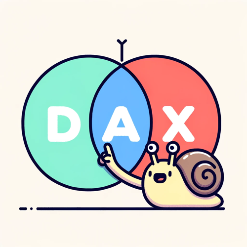
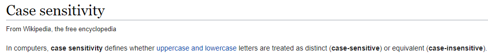
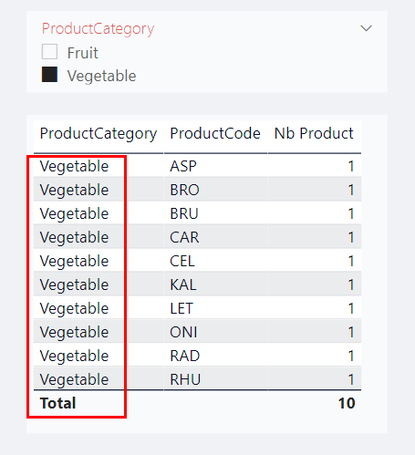
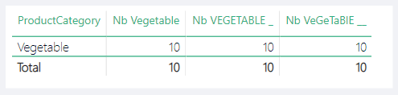

DAX is case insensitive

This week with my colleague Vincent Philipot, we learned something that many of you already know. (But maybe not!)
You can download the Power BI file on GitHub
DAX is case insensitive!! Yes!! And nobody told me before!
What does it mean?
Here is a short description available on Wikipedia

But because an example is worth a thousand words, here is some screenshot. (You can download this example in the lazydax file)
In our dataset we have 10 differents Products with a ProductCategory = Vegetable

I wrote 3 differents measures to count the number of product with a ProductCategory equal to:
Vegetable
Nb Vegetable =
CALCULATE(
COUNTROWS('Product')
,FILTER('Product', 'Product'[ProductCategory] = "Vegetable")
)
VEGETABLE
Nb VEGETABLE _ =
CALCULATE(
COUNTROWS('Product')
,FILTER('Product', 'Product'[ProductCategory] = "VEGETABLE")
)
VeGeTaBlE
Nb VeGeTaBlE __ =
CALCULATE(
COUNTROWS('Product')
,FILTER('Product', 'Product'[ProductCategory] = "VeGeTaBlE")
)
And when me and most of my colleagues would expect a different behavior, results are the same

Conclusion
I think I didn’t see it before because I have a strong programmer background, and it seems very weird to me.
And when I have to filter to a subset of value, I only base my FILTER on technical codes that have that kind of soft rules already applied.
You can download this example in the lazydax file here

More articles
After a web search, I saw that our Power BI stars (Data gods in reference to this list from Christopher Wagner) wrote very nice articles about this subject.
Letter case-sensitivity in DAX, Power BI and Analysis Services - SQLBI
Chris Webb’s BI Blog: Power BI And Case Sensitivity Chris Webb’s BI Blog (crossjoin.co.uk)
In all the cases, I hope that you learned something new! :)